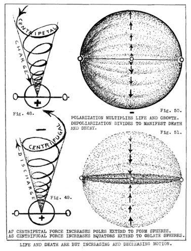

LESSON NUMBER 21 DEEPER THOUGHTS OF LIFE AND DEATH¶
“Take thou man’s death away from him in this new day of man. Give him eternal Life in Me by knowing Me in him.”
From The Divine Iliad
We again repeat God’s words as they were given to me in my instructions regarding the giving of His new Message to newly comprehending man of this electric age.
When saying “take thou his death away from him” our Father-Mother means that man is eternal and cannot die. He does not mean that bodies do not die, for all creating things grow, decay, generate and radiate as they sequentially appear, disappear and reappear.
Life and death are but opposite expressions of the same thing, an eternal continuity of repeated interchanging with each other, for life could not live without death and, conversely, death could not die without life.
It might clarify God’s meaning in His Word if the above were paraphrased as follows: “Take thou man’s ignorance and fear of death away from him and give him knowledge of eternal life in him. Make him to know that he lives in Me and never dies, for I am he. In Me there is no death.
“Make him to know that life in bodies is but the multiplied motion of My concentrative thinking–and death is but a division of that motion as My thinking decentrates to find rest in Me. And when both life and death are added together their total is but the zero of rest in Me.”
Reduced to its utmost simplicity this means that life and death are but two opposite directions of motion. Life is the generative direction of concentrative thinking and death is the radiative direction.
What could be more simple? Our bodies are but wave cycles of motion. Our bodies simulate eternal life by the eternal repetition of life-death cycles, but our bodies are not our Persons, or Beings, or our divine Selves.
That is the thing God wants the new age of man to know. Past ages have feared death because they did not know its meaning. The dread of death is born out of the belief that man dies when his body no longer functions, and that death of his body is his end.
It is unbelievable how many intelligent people of today actually believe that way. In our acquaintance is a very wealthy, successful, intelligent, kindly man who lives life generously and abundantly who says: “When you are dead you’re dead, and that’s the end of you.” And he sincerely believes it because he thinks of his body as being his Self. He actually believes that his intelligence is within his brain, that his brain is Mind, and that his own individual Self has no connection with any other Self, or with a universal Mind.
IF LIFE AND DEATH ARE BUT MOTION, WHAT–THEN–IS MOTION?¶
If we would know what our electric bodies are, and how they are extended from our spiritual Selves to simulate our Selves by fast and slow two-way motion, we should not only know what electricity is but how it works.
Also, if we would know how to control our bodies which we ourselves have extended from the spiritual SOULS of us because of our DESIRE and our WILL, we should better know the relation of the Intelligence which is within each body to control it, and the body itself.
This is the knowledge which will mark a new day in all social, industrial, scientific and medical practices. The fact that our physical bodies are but moving extensions of our spiritual Selves has but begun to enter into human Consciousness. It will affect you personally to your great advantage in the measure of your ability to comprehend it.
Just as the visible tree is made to appear out of its invisible Soul-seed by increasingly violent motion, and continue to grow into a bigger and better tree as long as the violence of motion can be multiplied into more violent motion, and then disappear as multiplied motion is reversed by dividing it, so has invisible man been made visible by fast motion.
The particular point I wish to emphasize is that the whole intellectual world must revise its concepts regarding human bodies, and the practices concerning them, medically and otherwise. We have regarded them as our Selves instead of instruments for manifesting our Selves. We have been mightily misled into treating effect with effect instead of with CAUSE.
We have magnified the importance of motion, which is the sole ingredient of our bodies, to the exclusion of considering the source of that motion in the seed pattern of our Souls. When we know that a single thought can change the polarity of our entire body toward either life or death–likewise changing its entire chemistry toward increasing alkalinity or acidity to strengthen or weaken it–or can change the shape of every corpuscle of matter in the entire body in the direction of either growth or decay,–the medical profession will radically change both its principles and practices in dealing with the ailments of bodies.
Likewise you and I and our neighbor who are seeking happiness, prosperity and great achievement in life will at last find that we must cease setting up insurmountable obstacles in our business or social lives which each of us individually, and the whole world nationally is constantly doing, thus preventing the happiness, prosperity and power we all long for.
A NEW VIEWPOINT¶
Let us, therefore, look upon all bodies for what they are, instead of what we think they are. Bodies are but waves of motion, pulsing waves of motion, which increase in violence to express life and decrease to express death.
Bodies of matter in motion have been man’s realities for ages. The time has come when the unfolding human race must know the unreality of moving bodies and the reality of their Source of motivation. Reality can never be in motion for motion ceases, but the stillness from which motion extends is as eternal as the silence from which sounds extend. Reality must be eternal in order that it be real.
Go back, therefore, to first principles as outlined in the first ten pages of Lesson No. 9 and review them carefully until the conviction is imbedded in you that the undivided Light of Mind-knowing is the reality from which thought imaginings extend and retract in pulsing sequences to make believe that their pulsing electric motions are the ideas which their motion simulates. Meditate upon this thought until you thoroughly comprehend that ALL MOTION IS MAKING BELIEVE that it is something which it really is not.
Let Fig. 8 assist you in realizing what YOU are when you can so far forget your body that you are the undivided, unchanging invisible MIND of Creation. Then let Fig. 9 picture for you what your Mind does when it thinks what it knows by taking its ONE WHOLE IDEA apart into millions of seemingly separate ideas, and dividing each of those separate ideas into pairs of sexed opposites.
Then realize that these sexed opposites forever resist their division by eternally attempting to void their unbalanced opposition, but never succeed.
This will enable you to picture Creation for what it is–a desire of Mind to create moving bodies in the forms of Mind imaginings TO MAKE BELIEVE that the moving bodies ARE THE MIND IMAGININGS. This is accomplished by projecting them from the stillness of their Source, followed by an equal desire to return those bodies to their stillness by cessation of motion.
If you will think of all those moving forms in Fig. 9 which emerge from the formlessness of the Mind universe of rest, and then disappear into it, you will much better comprehend the pulsing heartbeat of Creation. In simple words, Creation is but an electric record of Mind imaginings, but we should not be deceived into thinking that the record is that which created it.
If you will then realize that every action in Nature starts from a point of rest, seeks a point of rest, and returns to a point of rest, you will better comprehend the idea of the emergence of matter from “space” and the subsequent swallowing up of matter by “space.”
Likewise you will better understand the pulsing of the universal heartbeat which concentrates and decentrates as thought-power multiplies and intensifies electric tensions, while lessening desire divides and releases them.
Likewise you will better understand the mechanics of motion as the concentrative half of the universal pulse compresses large volumes of low potential into small volumes to create visible solids, then “goes into reverse” to expand the compressed solids into invisible space.
Also you will more clearly visualize the universal heartbeat as a universal pump which compresses and expands, simultaneously and sequentially, to seemingly divide the undivided, to change the changeless, to give measure where no measure is and to condition the unconditioned.
Also you will better realize that the energy which motivates all motion is in desire of Mind to express idea in moving forms of idea, and not in the moving forms which result from desire.
Likewise you will discover in your meditation that desire itself is divided into the positive desire to manifest life through multiplied motion and the negative desire to seek rest to manifest death through cessation of motion.
If you will meditate long upon this thought you will realize that even desire to multiply your power to think concentratively is followed by a desire to rest from the fatigue of that concentration.
Also, that if you work actively all day you will want to lie down and rest all night. Then when you rest all night you are reborn with new life so that you can again work all day.
In the preceding paragraph I have described the whole principle of life and death, and how each borns the other and is reborn from the other.
Let us review it. You begin your day of manifesting LIFE from a point of rest in sleep. Your day is filled with positive actions in building the product of your thinking. The energy which you have generated during the night while at rest is gradually radiated during the day until you have to stop at a point of rest because you cannot generate more energy. You have gradually grown so tired that you again have to lie down to rest in sleep for the night.
Vigorous action and desire for work in the morning manifests the life principle. Relaxing and lying down to sleep at night from fatigue manifests the death principle. During the night of death the body is constantly generating to born life from death at the dawn of a new day. During the day of life the body is constantly degenerating to born death from life when the night of life comes. To live is to polarize idea. To die is to depolarize it.
You are forever dying as you live, and forever living as you die. Every pulsebeat of your heart manifests both life and death.
POSTULATES AND AXIOMS CONCERNING LIFE AND DEATH¶
The direction of motion which manifests LIFE is the inward radial direction which forever accelerates as it approaches its center of gravity. This is the positive direction which multiplies the power of light-waves by compressing them into hot solid spheres. It is the centripetal direction of concentrative thinking which is the cause of gravitation. It is the direction of polarization which charges the body with increasing vitality. (See Fig. 48.)
The direction of motion which manifests DEATH is the outward radial direction which forever decelerates as it expands in space. It is the negative direction which divides the power of light-waves by expanding them into the coldness of space. It is the centrifugal direction of decentrative thinking which is the cause of radiation. It is the direction of depolarization which discharges the body by ever lessening its vitality. (See Fig. 49.)
LIFE is in the stillness of the magnetic LIGHT of the universal equilibrium.
LIFE is manifested in matter by dividing the universal equilibrium into pairs of opposite conditions which we call LIFE and DEATH.
LIFE and GROWTH and GENERATION are manifested in matter by GRAVITATION.

Archival Plate (image048.gif)¶
DEATH and DECAY and DEGENERATION are manifested in matter by RADIATION.
LIFE in bodies means increasing power of GRAVITATIONAL CHARGE to pull inward from within to increase their polarization. Increasing polarization means increase of electric potential. Increase of electric potential means increase of the power of positive and negative poles to pull away from each other.
DEATH in bodies means increasing power of RADIATIONAL DISCHARGE to thrust outward from within to decrease their polarization. Decrease of polarization means decrease of electric potential. Decrease of electric potential means decrease of the power to polarize.
That which man calls LIFE and DEATH is but increasing and decreasing motion.
Increasing motion causes the gradual formation of polarized spheres which are two-way extensions from their equators. (See Fig. 50.) Decreasing motion causes the spheres to withdraw into their equators by gradual depolarization. (See Fig. 51.)
All bodies are electrical recordings of Mind thoughts.
Mind-thoughts pulse in concentrative-decentrative sequences which we call cycles.
LIFE and DEATH of bodies are but cyclic recordings of Mind-thoughts. Thoughts come and go–and life and death record their comings and their goings in electric bodies which appear, disappear and reappear forever.
SUMMARY¶
And that is all that life and death is. When we can think of our bodies as just transient states of motion which are but dramatizing the thought imaginings of our eternal Selves, the more we can realize we, our Selves, are UNIVERSAL MIND, creating bodies for our Selves,–yea, creating the universal body for the Universal One Self.
This is good to know but that does not mean that our human emotions are to be voided when bodies of our loved ones cease to continue their physical existence with us. When we grieve for loss of human companionship we are fully justified in so doing, for no amount of knowledge should dehumanize us to the extent that grief should be “reasoned away” by knowledge.
The antidote for grief, however, is knowledge. When we know that we cannot die, and that desire for body still continues forever in the eternal Self of man–and that a new body will polarize from that desire just as surely as dawn follows night, we will then have an enrichment for our grief through knowledge, instead of misery and hopelessness due to Ignorance of our immortality.
The confusion which has made death so tragic and terrible has arisen from the belief that sensing is both thinking and knowing.
A most common expression regarding anyone whose senses have ceased vibrating for any reason, such as sleep or anesthesia, is that such a one is unconscious. There is no such condition as unconsciousness. What one really means is that one’s brain has ceased sensing because of being depolarized.
Mind is always conscious. Mind always knows and desires whether the body is asleep for a night, or for the longer interval of acquiring a new body. The Mind of one can always become ONE with the Mind of another because they are ONE in essence and vary only as to the state of their respective unfolding–which is commonly termed “individuality”.
When any one asks that age old question, “Can I contact my father–or other loved one–who has passed on?” they really mean “Can my body contact their bodies? Can my senses contact their senses? Can I ask them questions about whether they are happy, or about a business problem?”
People who ask such questions do not think things through. The one who has “passed on” has not passed on. He still is, as he always has been, in the undivided universe of Mind, but he has had a sensed electric body which belongs to the divided universe of change.
When he got rid of that electric wave body the electric sensing which belonged to it disappeared with it except for the patterns of thoughts and experiences which became permanently recorded in his Soul and seed.
The senses are electric. They will not vibrate in discharged, or depolarized bodies, just as an electric bulb will not light from a dead storage battery.
Mind can always contact Mind, for all-knowing is universal, but vital polarized bodies cannot contact devitalized, depolarized bodies.
This is too early a stage in these lessons to expand this idea further at this point, for there is still much more preparation for higher concepts needed before the new thinking of higher concepts could be comprehended without too much strain.
Suffice it for now to say that communion between Mind and Mind–whether of man and man, or man and God–will always be as it has always been–for the drama of Creation is being played forever and forever. There is a plan and destiny in it–and you and I are actors in it–and God is the Playwright. You and I are also the Playwright when we know ourselves as Undivided and Unchanging–even though we need bodies to play the parts of the divided and the changing.
Communion of Mind and Mind is in the timeless language of the Light of all knowing. We shall talk about this in future lessons when we quite thoroughly understand that there is something beyond the sensing of bodies which has no need of bodies.
Just as there are inventions to come as yet undreamed of, so, likewise, there are mental powers to unfold which are as yet undreamed of.
The Cosmic Age, now dawning, is a far step in the unfolding of that in man which transcends his body.
CONCLUSION¶
The following words of our Father-Mother given in His Message for the Cosmic Age of man will be food for your deep meditation while awaiting further enfoldment of the glory which is man.
“Again I say, I am the Soul of My universe of creating the things.
“Within My Being is desire for manifesting My Being. Desire in Me is Soul in Me.
“That which is Soul in Me desires to manifest in form through Light. Light extendeth from Soul in Me and returneth to Soul in Me, the extension and returning being two seeming lights of Me.
“Again I say I am the seed of My unfolding-refolding universe. Within My Light all formless seed of planned idea are enfolded in My Being at rest in Me.
“Again I say all things extendeth from Me and returneth to Me. From Me all things are born from seed of thought in Me, and born again with each pulsation of My thinking.
“There is naught but birth in My imagining. There is no death in Me, for endings and beginnings are one in Me. Naught but life reacheth out from Me, and naught but life meeteth returning life for rebirth in Me.
“Wherefore I say, Ye must be born again, and yet again unto that infinity of mirrored reachings which is My imagining. Thus is My One Idea continued endlessly in imagined forms of My thinking. Thus is My One Idea reborn as many ones in the multiplying mirrors of My Light, forever without end.
“Again I say, the mirrored multiples of My thought images are but reflections of My imaginings. They are not Me.”
From THE DIVINE ILIAD (Pages 152/3 The Secret of Light)